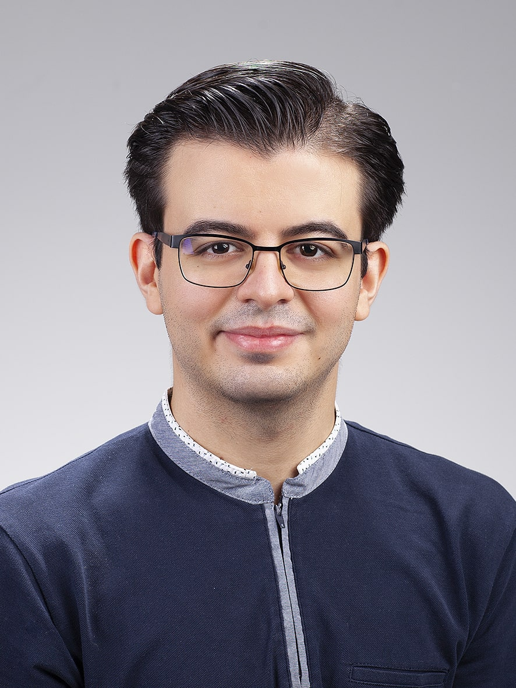

Merhaba, ismim Ömer KULUÇ. öğrenme ve gelişme isteğinde olan bir front-end geliştirici adayıyım. Bilgi seviyemi geliştirip kullanıcı dostu ve etkileyici web siteleri oluşturma hedefindeyim.
Öğrenme sürecinde yeni teknolojileri keşfetmek ve projelerimle kendimi sürekli geliştirmek benim için bir motivasyon kaynağı. Kendi projelerimi hayata geçirerek, öğrendiklerimi pratiğe dökme ve web dünyasında yerimi alma yolunda ilerliyorum. Bu alanda öğrenme ve gelişme sürecim devam ederken, gelecekte daha karmaşık ve zengin web uygulamaları geliştirmek için sabırsızlanıyorum.
Kendimi, sadece statik sayfalar oluşturan bir geliştirici olarak değil, aynı zamanda interaktif, kullanıcı dostu ve estetik web deneyimleri yaratmayı hedefleyen biri olarak görüyorum. Bu hedefe ulaşmak için CSS ve JavaScript gibi diğer temel teknolojilerle ilgili bilgi edinmeye başladım ve her gün yeni şeyler öğrenmek için büyük bir istek duyuyorum. Ayrıca, responsive tasarım prensiplerini öğrenerek, her cihazda mükemmel bir deneyim sunacak web siteleri geliştirmek istiyorum.
Her yeni projede, öğrendiklerimi pratiğe dökme ve kendi sınırlarımı aşma fırsatını buluyorum. Hedefim, yalnızca web geliştirme konusunda teknik beceriler kazanmak değil, aynı zamanda problem çözme yeteneklerimi geliştirerek, kullanıcılara en iyi deneyimi sunacak yaratıcı çözümler üretebilmektir.
Bu süreçte karşılaştığım zorluklar beni motive ediyor ve her biri, beni daha yetkin bir geliştirici olma yolunda bir adım daha ileriye taşıyor. Kendi projelerimi hayata geçirdikçe, öğrenme sürecimde ilerliyor ve gelecekte, daha karmaşık ve etkileyici web uygulamaları geliştirerek bu alanda iz bırakmayı amaçlıyorum.